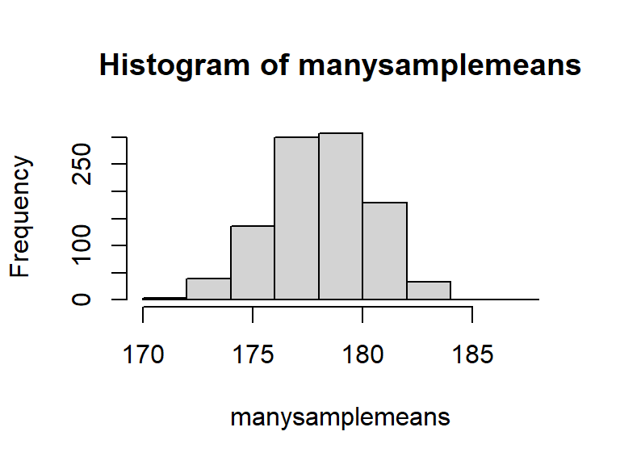
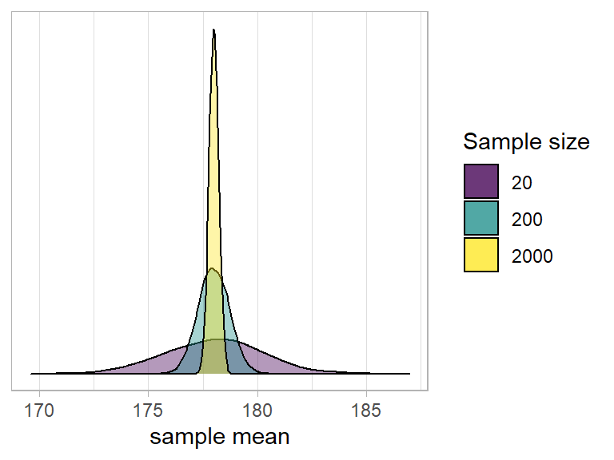
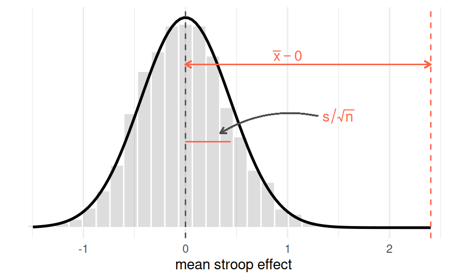
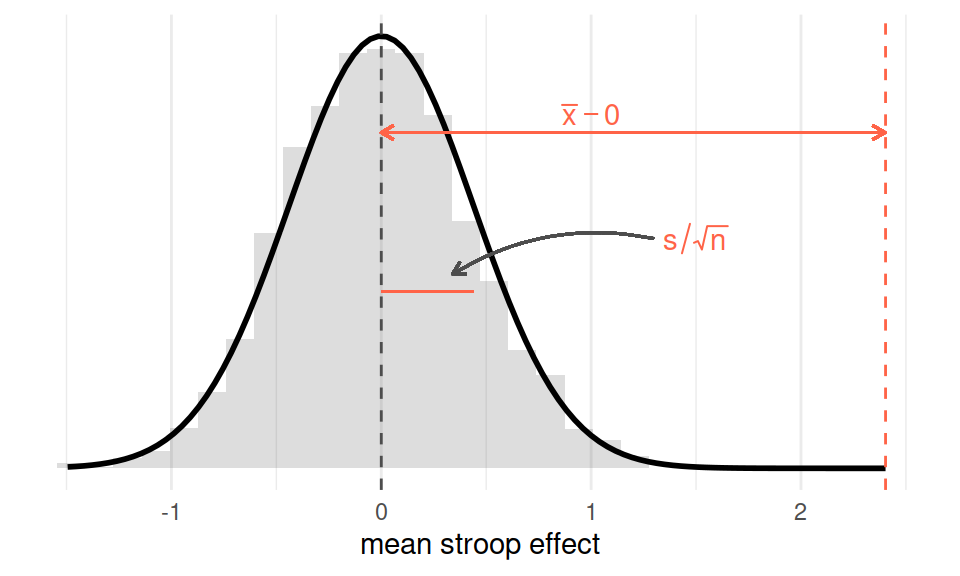

Hypothesis testing
Preliminaries
- Open Rstudio, make sure you have the USMR project open, and create a new RMarkdown document (giving it a title for this week).
Reading: Standard error
Recall what we have seen thus far:
We can generate a sample of size \(n\), drawn from a population which has a mean of \(\mu\) and a standard deviation of \(\sigma\):
# draw random sample of n = 10 from # a population with mean 178 and sd 10 rnorm(n = 20, mean = 178, sd = 10)And we can calculate the mean of a random sample:
mean(rnorm(n = 20, mean = 178, sd = 10))## [1] 182.4367We can repeat this process many times (using
replicate()), so that we have many sample means:manysamplemeans <- replicate(1000, mean(rnorm(n = 20, mean = 178, sd = 10))) # we now have 1000 sample means length(manysamplemeans)## [1] 1000
Question: Why are we doing this?
What we’re doing here is showing the process of taking many samples of the same size from a population, and calculating a statistic on each sample.
The distribution of these sample statistics shows how they will vary from sample to sample due to chance.
In the above example, for samples of \(n=20\) drawn from a population with mean \(\mu=178\), and standard deviation \(\sigma=10\), we’re quite likely to get sample means between 174 and 182, and we’re less likely to see sample means \(<174\) and \(>182\).
hist(manysamplemeans)
- The theoretical distribution of how sample statistics will vary on repeated sampling is known as the sampling distribution.
- The standard deviation of the sampling distribution is known as the standard error.
- Note that the bigger our sample size, the smaller our standard error - i.e., the more precise our sample means are going to be as estimates of the population mean: 
Standard Error in practice
In practice, we cannot actually draw lots and lots of samples in order to construct a sampling distribution, and we do not know the population parameters which are required to generate samples like we did above.
Instead, we start with just one observed sample, e.g.:
observed_sample <- c(176.86, 169.45, 177.93, 175.89, 169.05, 162.56, 189.29, 196.15, 159.45, 165.69, 186.88, 176.9, 188.52, 164.05, 175.62, 180.89, 193.63, 161.59, 182.74, 184.23)What we can do is either:
A: Simulate lots of sampling. We can actually use resampling with replacement from our original sample as a means of imitating repeated sampling. This is known as Bootstrapping.
# bootstrap resample means bootstrap_means <- replicate(1000, mean(sample(observed_sample, replace = TRUE))) # SE = sd of bootstrap resample means sd(bootstrap_means)## [1] 2.452104or B: Estimate the standard error using a formula:
\[ SE = \frac{\sigma}{\sqrt{n}} \\ \quad \\ \begin{align} & \text{Where} \\ & \sigma = \text{standard deviation} \\ & n = \text{sample size} \\ \end{align} \] Note that \(\sigma\) is the standard deviation of the population, which is unknown to us. However, we can use the standard deviation of our sample (\(\hat \sigma\) or \(s\)) as our estimate of this:# SE = standard deviation / square root of n sd(observed_sample)/sqrt(length(observed_sample))## [1] 2.459404
Reading: Hypothesis testing
The sampling distribution is at the basis of null hypothesis significance testing.
Recall from the previous lab that we had a dataset on 131 participants who took part in a Stroop Task experiment. Each participant completed a color-naming task in two conditions: Matching and Mismatching. The differences in participants’ times for each condition are taken as indicating the effect of the color-word inteference (We have been calling this the “stroop effect”).
In our observed sample, the stroop effect had a mean \(\bar x =\) 7.9 and a standard deviation \(s=\) 5.02.
We can theorise about what the sampling distribution of means from samples of size \(n=131\) would be like, assuming there to be no stroop effect (i.e., the mean in the population is zero).
We can estimate the standard error by generating many samples of size \(n=131\):
# bootstrap resample means: many_stroop_means <- replicate(1000, mean(sample(stroopdata$stroop_effect, replace = TRUE))) # standard deviation of 1000 resample means sd(many_stroop_means)## [1] 0.4474773or we can estimate it by using the sample formula: \(\frac{\hat \sigma}{\sqrt{n}} = \frac{5.02}{\sqrt{131}} = 0.439\).
Either way, what we get is an idea of the distribution of what we would expect from means from samples of 131, under the hypothesis that there is no “stroop effect” - it will have a mean of 0 and a standard deviation of approximately 0.44.
Against this, we can then compare our observed mean:

Figure 1: Sampling distribution assuming population mean = 0, and observed sample mean
What we implicitly have here are two competing hypotheses: the null hypothesis (\(H_0\)), and an alternative hypothesis (\(H_1\)):
- \(H_0: \mu = 0\) The mean “stroop effect” in the population is equal to 0.
- \(H_1: \mu \neq 0\) The mean “stroop effect” in the population is not equal to 0.
We can do is perform a statistical test against the null hypothesis.
A simple t-test
For determine whether a sample mean \(\bar x\) is likely to have been generated by a process with a specific mean \(\mu_0\), we can calculate a \(t\)-statistic:
\[
t = \frac{\bar x - \mu_0}{\frac{s}{\sqrt{n}}}
\]
Think about what each part of the formula represents. The top part \(\bar{x}-\mu_0\) is the distance from the observed mean to the hypothesised mean:
mean(stroopdata$stroop_effect) - 0## [1] 7.902977And the bottom part is the standard error - the standard deviation of the sampling distribution:
# SE = sd / sqrt(n)
sd(stroopdata$stroop_effect)/sqrt(length(stroopdata$stroop_effect))## [1] 0.4382302
Let’s calculate it now:
t_obs = (mean(stroopdata$stroop_effect) - 0 ) / (sd(stroopdata$stroop_effect)/sqrt(131))
t_obs## [1] 18.03385We can now ask, assuming the null hypothesis \(H_0\) to be true, what is the probability that we observe a t-statistic at least as extreme as the one we observed?
Probability in NHST (null hypothesis significance testing)
Probabilities in NHST are defined as the relative frequency of an event over many trials (as “many” \(\to \infty\)). This requires assuming some features of the data generating process which guides what the “many trials” would look like (e.g., that there is no effect).
A p-value is the probability of observing results as or more extreme than the data, if the data were really generated by a hypothesised chance process.

t_obs = (mean(stroopdata$stroop_effect) - 0 ) / (sd(stroopdata$stroop_effect)/sqrt(131))7.902977/(sd(stroopdata$stroop_effect)/sqrt(131))## [1] 18.03385t.test(x = stroopdata$stroop_effect, mu=0)##
## One Sample t-test
##
## data: stroopdata$stroop_effect
## t = 18.034, df = 130, p-value < 2.2e-16
## alternative hypothesis: true mean is not equal to 0
## 95 percent confidence interval:
## 7.035991 8.769963
## sample estimates:
## mean of x
## 7.902977